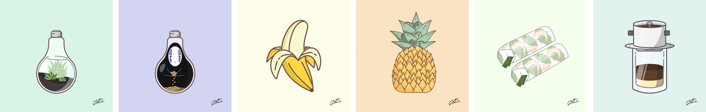

365 Day Design Challenge
November 1, 2019 was the day I started my design journey. I didn’t know what I was getting myself into, but it was all worthwhile. Here’s my story.
Why?
2 years ago I bought a tablet and started scribbling cute sticker designs on Adobe Photoshop as a side hobby. After a year long hiatus from designing I was itching to get back into it. During the winter of 2019 I met a product designer who completed a 365 day design challenge which inspired me to do the same.
Coming into the challenge I knew it wouldn’t be easy, so I started the 100 Days with a focus on vector illustrations. The original purpose for this design challenge was to improve my design skills and become proficient in design tools such as Adobe Illustrator and Sketch.
You can check out my progress here
Getting started: Tutorials
I remember the first day I sat down and tried using the pen tool. It was a disaster. I almost gave up within the first hour. Without any previous experience with vector designs I started watching youtube tutorials and practiced for a few days. The very first tutorial I worked through was creating vector plants on youtube. This gave me foundation on cutting shapes, aligning items and also getting more comfortable with the pen tool. Within a week the tutorials helped me build the confidence that I needed to begin my 365 day journey.
The beginning: Day 1 - Day 30
The first few days my designs were related to the tools I've learned from tutorials and soon after that I was able to start creating independently. I started posting my work on Instagram and had a handful of my friends followed me through the fun. ⅓ into my design challenge I created vector designs of random things or anything that I could think of.
Gradually building my audience, I set aside 1 to 3 hours a day solely for designing. I felt the need to elevate my flat designs by introducing elements such as shading, masking and 2D design. After the first 10 days, I familiarized myself with shortcut tools and started producing designs more quickly.
Challenging days: Day 30 - Day 75
I have become more proficient with my skills and use of design tools by ⅔ into the challenge, however this was during my exam period. I was on a 1 week hiatus to focus on my studies, which was needed to relieve the cognitive load and allow my brain to rest. Although I felt discouraged for missing 7 full days of design, I made it up by constructing expert-level vectors that require more detail. This was only the halfway point of my challenge and I knew I would be running short on original content, so I decided to focus on a theme where I can reuse similar colour palettes and make my overall designs more cohesive. This method saved me a lot of time and allowed me to focus more on the design content and style more intensely.
Rewarding days: Day 75 - Day 100+
With both motivation and confidence, I can see that my overall design has improved immensely since Day 1 of the design challenge. I explored social media and design platforms such as Instagram, Dribble and Medium to see other forms of art that I could try my hand at designing. I dabbled in creating neon vectors and also isometric designs, which was refreshing as if I was learning how to design again.
Does it end here? Day 100 - Day ??
Nope! I still have 200+ days to go. Please join me on my journey of continuing my 365 Days of Design Challenge as I will continue into daily UI Designs and Motion Designs.
Takeaways
After successfully completing 100+ designs I feel fulfilled with accomplishments. The late nights, and long hours of designing has taught me that determination and consistency will improve your craft by ten-fold. Although I spent countless nights catching up on creating content, it has paid off as I was given opportunities to create commissioned logo work. Here’s a few things I’ve learned over the 365 Day Design Challenge.
Being productive — Follow through with one design and make sure you set pivotal goals for yourself. Whether it be trying new design tactics or creating a simple vector by the end of the night. There were days where I felt sluggish and my designs didn’t feel right, but posting it was worthwhile because I knew I could reflect on my progress.
Engaging in the design community — Create an account for your designs. Whether it’s Medium, Dribble, Instagram or even Facebook, sharing your work with other designers in an inclusive community is rewarding. I’ve received many compliments and supportive feedback from friends and designers on Instagram.
Building confidence — It’s okay if you miss a day. Don’t be discouraged, everyone needs a mental break sometimes and spending hours on end designing can be frustrating. Making original content isn’t always easy, so I decided to create my designs in themes where the colour selections are similar and make the overall piece cohesive and easier for me to complete.
Not everything you make will look nice —It’s part of the journey, just post it. There’s good days and there are bad days. The best way to improve your skills and use of design tools are from practice and dedication. Don’t let one design stop you from pushing forward.
Your turn!
Here are the resources that helped me get started. Have fun designing!
– Tiantian Xu - 100 Days Vector Illustrations
– Youtube vector design tutorials
– Instagram accounts that I follow for inspiration:
jackrdesign, tanguyjestin,
ggermyu, catalystvibes
Thank you for reading
here's a 30s clip of my designs